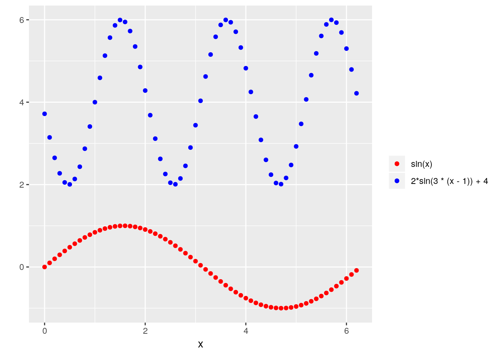
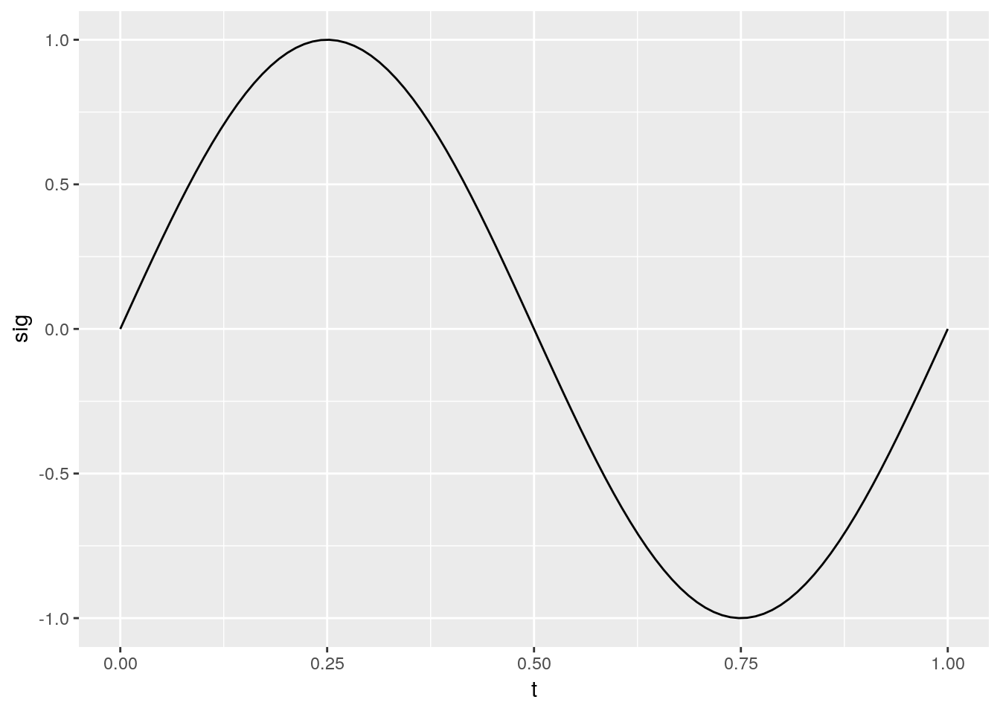
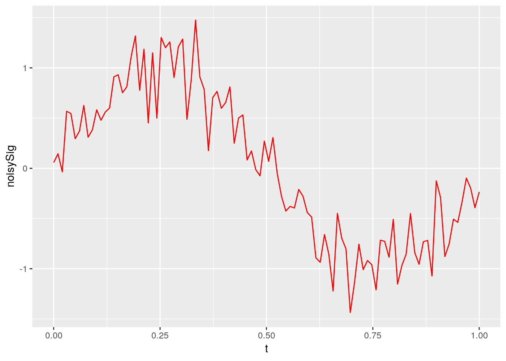
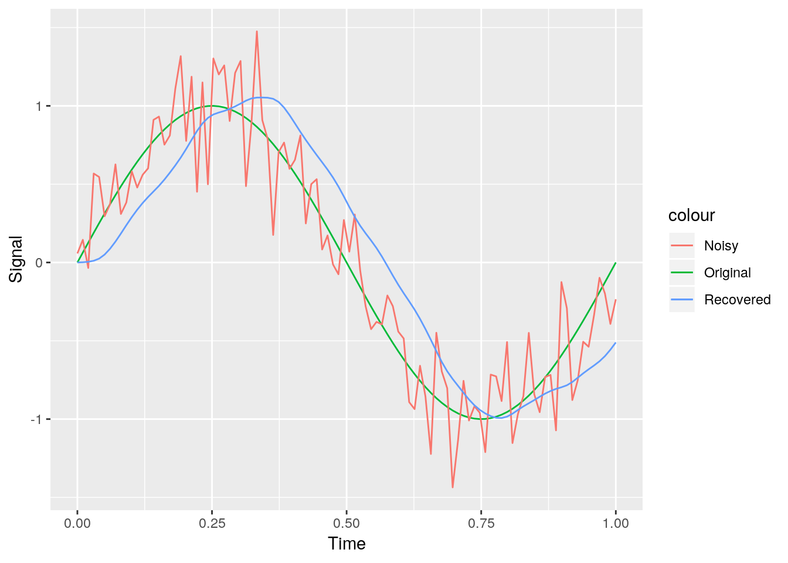
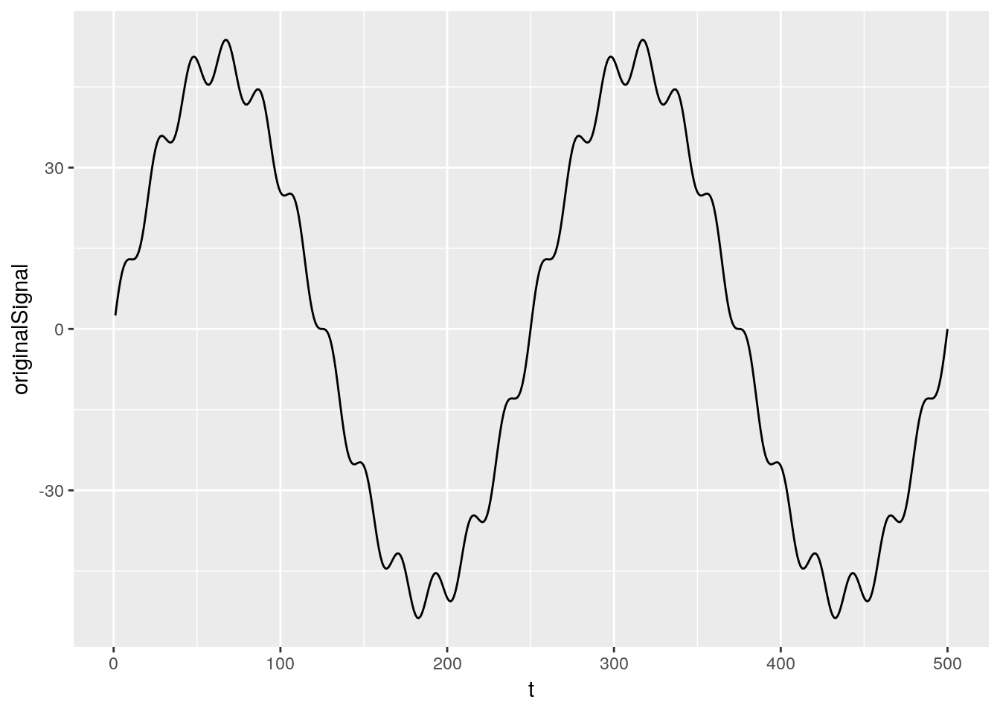
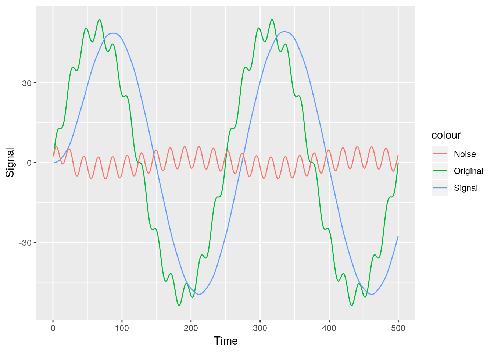
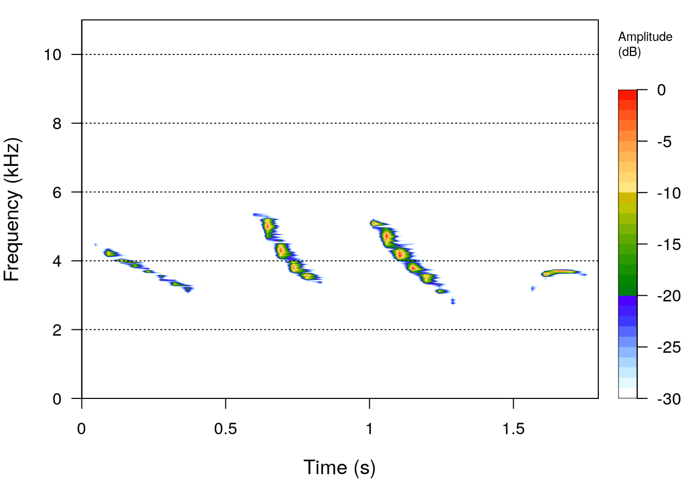
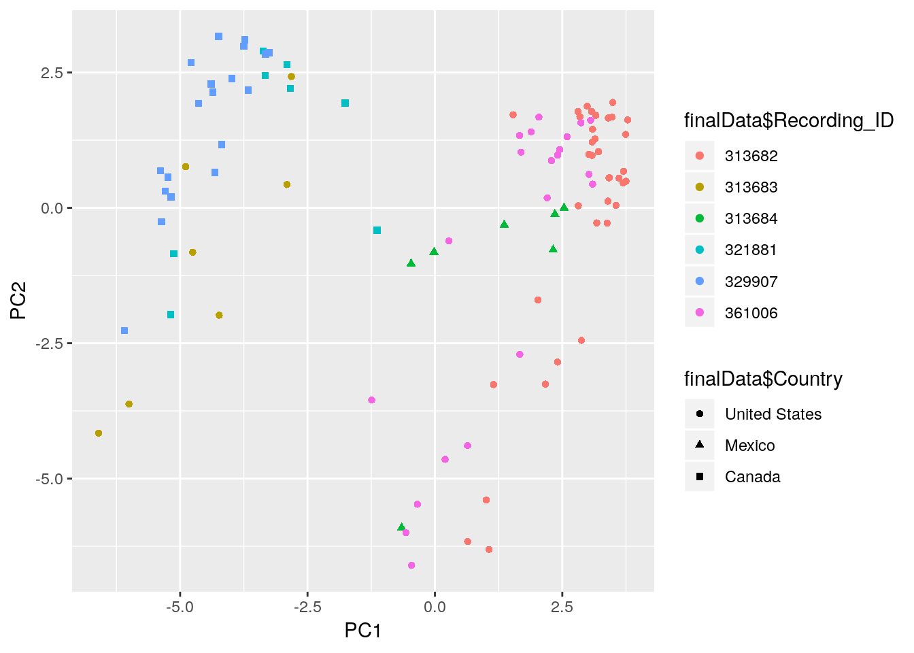

Chapter 14 Digial Signal Processing
Signals are everywhere. And no, that is not an exaggeration. In today’s technology age, signals really are pervasive throughout most of the world. Humans and animals use audio signals to convey important information to conspecifics. Airplanes use signals in the air to obtain important information to ensure your safety on a flight. Cell phones are pretty much just one small digital signal processing device. They process our speech when we talk into the phone by removing background noise and echos that would distort the clearness of our sound. They obtain wifi signals to allow for us to search the web. They send text messages using signals. They use digital image processing to take really good pictures. They take a video of your dog when he’s doing something completely hilarious that you want to show your friend. The applications of digital signal processing (DSP) span numerous different fields, such as ecology, physics, communication, medicine, computer science, mathematics, and electrical engineering. Thus, having a basic understanding of DSP and it’s concepts can be very helpful, regardless of the field you decide to pursue.
In this chapter we will give a brief introduction to some central concepts in DSP and how we can explore these concepts using R. We will look at applications of DSP using some R packages designed for bioacoustic analysis. When doing digital signal processing, R is not typically the first computer language that comes to mind. Matlab, Octave, and C/C++ are often considered to be some of the best languages for DSP. But R provides numerous different packages (especially for working with audio data) that make it competitive with these languages for digital signal processing. We will use the signal package to do some simple digital signal processing, and then will use the tuneR, warbleR, and seewave packages to work with audio data to show you more specific examples of how R can be used in different fields of digital signal processing.
14.1 Introduction to Digital Signal Processing
First let’s go over some basics of DSP before we delve into working with signals in R. Digital Signal Processing is the use of digital tools to perform different signal processing operations, such as the analysis, synthesis, and modification of signals. But what exactly constitutes a signal? A signal is anything that carries information. In other words, it is a quantity that varies with time, temperature, pressure, or any other independent variable. As described above, signals pervade our everyday life, and thus the study of their behavior, how they work, how we can manipulate them, and how we can extract information from them is extremely important.
There are two main types of signals: continuous time signals and discrete time signals. Continuous Time Signals, as you might suspect, are continuous. They are defined at all instances of time over a given period. These types of signals are commonly referred to as analog signals. An example of an analog signal would be a simple sine curve plotted in 14.1. Notice that the sine curve is defined for every value on the interval from 0 to 2\(\pi\). This is an analog signal.
FIGURE 14.1: Example of an analog signal: a simple sine curve
Discrete Time Signals are not continuous. They are defined only at discrete times, and thus they are represented as a sequence of numbers (so by your experiences in R working with sequences of numbers you should already have an idea of how discrete signals are stored, how they can be manipulated, etc…). Figure @ref(fig:digital} is an example of the exact same sine curve as in Figure @ref{fig:analogsignal}, but in a discrete form. Notice how there are only values at specific points, and anywhere besides those points the signal is not defined. In a real-world application, these points would correspond to measurements of the signal.
FIGURE 14.2: Example of a discrete signal: a sine curve with some missing values
Notice the differences between the two graphs. The second graph is not defined at every point and is only defined at the points where a data point exists. This type of sampling will become important later in the chapter and in the exercise when we begin to work with sound data (which by the way takes the form of these simple sine curves we are working with here). There are many other shapes and forms of signals, but since we will later be focusing on audio data, and the sine curve is fundamental to any sort of sound, we for now will focus on working with a sine curve.
Signals have a wide variety of properties and characteristics that give each signal distinct behavior. The sine curve has two important characteristics. First, a sine curve is said to be odd since it satisfies the condition sin\((-t)\) = -sin\((t)\). This is easy to recognize by looking at the graph of a sine curve as you see that it is symmetrical over the diagonal at the origin. In addition, a sine curve is a periodic signal. A periodic signal is a signal that repeats itself after a certain interval of time (called the Period). This is true of all real sine curves. Understanding the simple properties of signals like we have done with the sine curve is a useful tool in digital signal processing as it allows you to recognize simple patterns that may occur with the signal in which you are interested.
Now that we have a general understanding of what a signal is and how we can use it’s properties to learn about it’s behavior, let’s now focus on some of the most important concepts in digital signal processing, and how we can implement them in R. Here are three of the most central topics to DSP:
- Fourier Transforms: signal processing involves looking at the frequency representation of signals for both insight and computations.
- Noise: defined as any signal that is not desired. A huge part of signal processing is understanding how noise is affecting your data and how you can efficiently remove or manage it.
- Filters: allow you to remove out specific portions of a signal at once, or allow you to remove noise from certain signals.
We will first briefly discuss working with noise and filters in R, and then we will work with Fourier Transforms in the context of audio data.
14.1.1 Sinusoidal Signals
As mentioned previously, sinusoidal signals are extremely important for signal processing. We saw an example of a continuous sinusoid and a discrete sinusoid. Here we will quickly discuss the mathematics behind coding a sinuosoid signal.
A sine wave typically takes the following form:
\[ f(\theta) = (\alpha) \text{sin}(b(\theta - c)) + d \]
The translations that you see above from the standard sine wave (sin(\(\theta\))) have particular terms. Here we give a quick summary of the terms in the above equation and their definitions:
- Period: the amount of time required to complete one full cycle of the sine wave. A standard sine wave has period \(2\pi\). The sine wave described above has period \(\frac{2\pi}{|b|}\)
- Frequency: the number of times a sine wave repeats itself within a single unit of time (which depends upon how the variable \(\theta\) is defined). This is the reciprocal of the period so in our case this is \(\frac{|b|}{2\pi}\).
- Amplitude: the “height” of the sine wave, or more properly, the distance from the x-axis to the most positive point of the sine wave. The standard sine wave has an amplitude of 1. The amplitude is controlled by the \(\alpha\) parameter, and thus our sine wave has amplitude \(\alpha\).
- Phase Shift: determines whether or not the sine wave passes through the point (0, 0). Our sine wave mentioned above is shifted to the right by the amount \(c\) and shifted up by \(d\).
Next we draw a few plots to show graphically how all these parameters influence the signal. We will graph these as digital signals.
> library(dplyr)
> x <- seq(0, 2 * pi, .1)
> standard <- sin(x)
> altered <- 2*sin(3 * (x - 1)) + 4
> graphData <- tibble(x, standard, altered)
> ggplot(data = graphData, mapping = aes(x = x)) +
+ geom_point(mapping = aes(y = standard, color = "sin(x)")) +
+ geom_point(mapping = aes(y = altered, color = "2*sin(3 * (x - 1)) + 4")) +
+ scale_color_manual("", breaks = c("sin(x)", "2*sin(3 * (x - 1)) + 4"),
+ values = c("blue", "red")) +
+ labs(x = "x", y ="")
Now that we understand the fundamentals of sinusoids, let’s see how we can work with noise and filters on sinusoids using R.
14.2 Noise and Filters
Using filters to remove noise and obtain only the desired portions of signals is a huge part of signal processing. Here we will give a couple examples of the many different functions available in the signal package for DSP. The signal package is a set of signal processing functions that was originally written for more “standard” signal processing languages, Matlab and Octave, but was later translated into R. It provides an extensive set of functions including filtering functions, resampling routines, and interpolation functions. To follow along yourself, install the package with install.packages("signal").
For a first example, consider the sinusoid generated below.
> library(signal)
> t <- seq(0, 1, len = 100)
> sig <- sin(2 * pi * t)
> ggplot(mapping = aes(t, sig)) +
+ geom_line()
This is a simple sinusoid that has an amplitude of 1 and a frequency of 1. It is not likely that when obtaining a real-world signal you would get a perfect sinusoid without any noise. Let’s take this graph and add some noise to it.
> noisySig <- sin(2 * pi * t) + 0.25 * rnorm(length(t))
> ggplot() +
+ geom_line(aes(t, noisySig), color = "red")
We add noise to the function by adding a random value (0.25*rnorm(length(t)) to each value in the signal. This is more typical of a real-world signal, as you can somewhat see the general shape (the signal you are interested in), but it is somewhat distorted as a result of noise. The signal package provides a long list of functions for filtering out noise. Here we will utilize the butter function to remove the noise from this signal in an attempt to obtain our original signal. This function generates a variable containing the Butterworth filter polynomial coefficients. The Butterworth filter is a good all-around filter that is often used in radio frequency filter applications. We then use the filter function from the signal package to apply the Butterworth filter to the data. Finally we produce a plot using ggplot2 that shows the original signal without noise, the noisy signal, and the recovered signal.
> library(dplyr)
> butterFilter <- butter(3, 0.1)
> recoveredSig <- signal::filter(butterFilter, noisySig)
> allSignals <- data_frame(t, sig, noisySig, recoveredSig)Warning: `data_frame()` is deprecated, use `tibble()`.
This warning is displayed once per session.> ggplot(allSignals, aes(t)) +
+ geom_line(aes(y = sig, color = "Original")) +
+ geom_line(aes(y = noisySig, color = "Noisy")) +
+ geom_line(aes(y = recoveredSig, color = "Recovered")) +
+ labs(x = "Time", y = "Signal")
You can see that the recovered signal is not perfect, as there is still some noise in the signal, and the timing of the peaks in the signal is not exactly matched up with the original. But it is clear that we have nonetheless removed a large portion of the noise from the noisy signal. Mess around with the argument values in the butter() function in the above code. See what changing the parameters does to the recovered graph. You can also explore the wide variety of filter functions available in the signal package by exploring the package documentation here.
For a second example, suppose we are interested in not only the signal, but also the noise. We will extract the low and high frequencies from a sample signal. Let’s start with a noisy signal
> t <- 1:500
> cleanSignal <- 50 * sin(t * 4 * pi/length(t))
> noise <- 50 * 1/12 * sin(t * 4 * pi/length(t) * 12)
> originalSignal <- cleanSignal + noise
> ggplot() +
+ geom_line(aes(t, originalSignal))
Again, you can easily recognize the pattern is sinusoidal, but there is noise in the signal that you want to extract. Perhaps you are interested in where the noise is coming from and want to analyze the structure of the noise to figure this out. Thus, unlike the previous example, we want to extract the noise from the signal and not simply eliminate it. To do this we can again use the Butterworth filter.
> lowButter <- butter(2, 1/50, type = "low")
> low <- signal::filter(lowButter, originalSignal)
>
> highButter <- butter(2, 1/25, type = "high")
> high <- signal::filter(highButter, originalSignal)
>
> signals <- data.frame(originalSignal, low, high)
>
> ggplot(signals, aes(t)) +
+ geom_line(aes(y = originalSignal, color = "Original")) +
+ geom_line(aes(y = low, color = "Signal")) +
+ geom_line(aes(y = high, color = "Noise")) +
+ labs(x = "Time", y = "Signal")
14.3 Fourier Transforms and Spectrograms
When working with signals you often have to consider whether or not you need to work in the time domain or the frequency domain. These two different domains can provide valuable information about a signal. The most popular way to explore signals in the frequency domain is to use Fourier Transforms. A Fourier Transform is a reversible mathematical transform developed by Joseph Fourier in the early 1800s. The transform breaks apart a time series into a sum of finite series of sine or cosine functions. This was a huge break through of it’s time, as Fourier argues that any signal can be broken down into a series of sine and cosine curves. This was a fantastic development and is still one of the most widely used tools in digital signal processing, which tells you how useful it truly is (and how brilliant Fourier was).
The Discrete Fourier Transform (DFT) is a specific form of the Fourier Transform applied to a time wave. The DFT allows you to switch from working in the time domain to the frequency domain by using the amplitude and the frequency of the signal to build the frequency spectrum of the original time wave.
To apply Fourier Transforms we use a window size. The length of the FT is controlled by the window length. Increasing the window size will increase frequency resolution, but this will also make the transform less accurate in terms of time as more signal will be selected for the transform. Thus there is a constant level of uncertainty between the time of the signal and the frequency of the signal59. Different windows can be used in a DFT depending on the application. There are numerous windows available within the seewave package (see Figure 14.3).
FIGURE 14.3: Different available filters within the seewave package
Computing a fourier transform on a whole sound or a single segment of the sound may not be enough information for what you desire. One great idea is to compute the DFT on successive sections along the entire sound signal. A window is “slided” along the signal and a DFT is computed at each of these slides. This process is called a Short-Time Fourier Transform. This method allows you to represent the signals in the frequency spectrum, while also maintaining most of the information from the time dimension (as Hannah Montana might say, it’s the best of both worlds).
We can plot the results of an STFT in what is called a spectrogram. The spectogram is so useful in bioacoustics, acoustics, and ecoacoustics (among others) because it allows you to represent three variables in a 2D plot, which avoids using a 3D representation that is genereally not appealing. The successive DFT are plotted against time with the relative amplitude of each sine function of each DFT represented by some color scale. In other words, the spectrogram has an x-axis of time, a y-axis of frequency, and the amplitude represented by the color scheme used inside the plot (which is usually included in a scale).
Let’s use a sample audio file provided by the seewave package and produce a spectrogram of it using the spectro function. R provides multiple functions like spectro that make the creation of spectrograms and Fourier Transforms extremely easy and logical, which is one of the many reasons to perform digital signal processing within the R environment.
> library(seewave)
> data(tico)
> spectro(tico)
Let’s explore more of the parameters for this function to get a better understanding of how it is working. Type in ?spectro in the R console. The spectro() function contains a lot of different arguments that allow you to control how the spectrogram is created. The f argument allows you to specify the sampling rate of your sound object. The wl option allows you to control the window length that is used when the successive DFTs are produced (aka the STFT). You can choose which window you want to use with the wn option. You can also specify the amount of ovlp between two successive windows with the ovlp argument. Let’s use some of these arguments and compare it to the standard spectrogram we previously produced.
> spectro(tico, f = 22050, wl = 1024, wn = "bartlett", ovlp = 5)
You can immediately see that there are some slight differences between the spectrograms. The first spectrogram appears to be more precise than the first spectrogram. Explore these parameters yourself to get a better understanding of how these different properties impact the short-time fourier transform and the spectrogram.
One cool thing about the spectro() function is that it produces a graph, but it also stores the values along the three scales. If you save the call to a spectro() function, that variable will be a list containing the values along the time axis, values along the frequency axis, and the amplitude values of the FFT decompositions. These values can be accessed in familiar ways ($time, $frequency, $amp).
Now that you have a visualization of the sound, we will use the tuneR package to play the sound so you can see exactly how it matches up with the spectrogram. First install the tuneR package, which is another package great for working with sound and signals in R. Then use the play function to play back the tico sound. Note that the second argument in the play function is the player argument, which may or may not need to be defined depending on your operating system and what audio players are installed on your system. In my case, I am playing the sound through the aplay player on a machine running Linux.
> library(tuneR)
> play(tico, "aplay")The audio matches up perfectly with the spectrogram. Pretty cool!
14.4 Analyzing Audio Data with warbleR
Now that we’ve explored how we visualize audio signals with Fourier Transforms and spectrograms, let’s now explore some of the packages in R used explicitly for bioacoustic analysis of audio signals. The warbleR package was written to streamline bioacoustic research inside of R, and it provides numerous different functions for obtaining, manipulating, and visualizing bioacoustic data (and especially bioacoustic data of birds). We are going to go through an example to display some of the many useful functions in the warbleR package. Our goal is to analyze the recordings of Cedar Waxwings from the xeno-canto database to determine whether or not there is variation in these calls across large geographical distances. Along the way we will showcase many useful functions in the warbleR package, and will compute numerous meausures that give us useful information about the signal. Let’s get started!
First off, create a new directory where you want to store the data and change the working directory to that folder. We will produce a lot of files in the following exercise, so it is best to use a new directory to maintain organization. Here is the directory we use, you should change yours accordingly:
> setwd("/home/jeffdoser/Dropbox/teaching/for875/for875-19/bookdown-crc-master/")We will extract sounds from a large and very common database in the field of bioacoustics, xeno-canto. warbleR allows you to easily query the database and work with the sounds maintained in their library. We are interested in the sounds of Cedar Waxwings, which just so happen to be my favorite species of bird. They are small, beautiful, majestic birds that are fairly common in rural and suburban areas (Figure 14.4). They also have a very large geographical region, spanning across all three countries in North America (no wall can stop Cedar Waxwings from crossing the border).
The warbleR package allows us to first query the database for the recordings of Cedar Waxwings (Bombycilla cedrorum) without downloading them.

FIGURE 14.4: Two cedar waxwings, possibly pondering whether or not Ross and Rachel will ever get back together (oh wait no that’s me as I write this chapter between binge watching Friends)
> library(warbleR)
> cedarWax <- quer_xc(qword = "Bombycilla cedrorum",
+ download = FALSE)113 recordings found!> names(cedarWax) [1] "Recording_ID" "Genus"
[3] "Specific_epithet" "Subspecies"
[5] "English_name" "Recordist"
[7] "Country" "Locality"
[9] "Latitude" "Longitude"
[11] "Vocalization_type" "Audio_file"
[13] "License" "Url"
[15] "Quality" "Time"
[17] "Date" We use the quer_xc function to query the database, and use the restriction of the scientific name for Cedar Waxwings so we only obtain recordings of our desired species. We see that this returns a data frame with a lot of useful information, such as the latitude and longitude of the recording, the date, the quality of the recording, and the type of vocalization (since birds have multiple different types of vocalizations).
Now we produce a map showing the locations of all of the recordings. The xc_maps function allows you to either save a map as an image to your hard drive, or you can simply load the image in the R environment. We will load the image in the R environment by setting the img argument to FALSE.
> xc_maps(X = cedarWax, img = FALSE)The recordings are mostly in the United States, but you can see there are recordings in Mexico and Canada as well. Now that we have an idea of where these recordings were taken, let’s look at what types of recordings we have. We will do this using the table() function.
> table(cedarWax$Vocalization_type)
call, song
5
flight call
7
song
4
call, flight call
7
call
63
begging call, juvenile
3
alarm call
2
alarm call, call, flight call, juvenile, song
1
Flight Call
1
call, dog
1
call, song, wing sounds
1
call, flock calls
10
Call
2
Calls of flock
1
juvenile calls
1
call, female, male
1
Feeding calls
1
call, flight call, song
1
Flight call
1 Look closely at the output from this function. This is a great example of the messiness of real-world data. Users from around the world input their data into this website, and this results in many different ways of describing the vocalizations produced by the birds. You can see the users used many different ways to describe the calls of cedar waxwings. There are 63 recordings labeled as “call” so we will just focus on these recordings, but keep in mind that in a more serious study, we may want to manipulate the labels and combine vocalizations that are actually of the same type.
Now that we have the recordings we want to work with, we download them and convert them to wav files. Since this is only an example, we will look specifically at six of the calls within the cedarWax recordings to minimize downloading and computation time.60
> newCedarWax <- subset(cedarWax, cedarWax$Recording_ID %in% c(313682, 313683, 313684, 321881, 329907, 361006))
> quer_xc(X = newCedarWax)Downloading files...
double-checking downloaded fileswarbleR and seewave are designed to work with wav files while the xeno-canto database stores its recordings as mp3 files. Luckily there is a very simple function mp32wav that converts all the mp3 files in the working directory to wav files. We then remove all the mp3 files from the current directory using the system function.
> mp32wav()
> system("rm *.mp3")warbleR gives us many easy ways to produce spectrograms for all of our desired sound files at once. To do this, we use the lspec function, which produces image files with spectrograms of whole sound files split into multiple rows.
> lspec(ovlp = 10, it = "tiff", rows = 5)Now look in your current directory and you should see .tiff files for all of the sound files. These files could be used to visually inspect sound files and eliminate undesired files as a result of noise, length, or other variables you are not interested in. But for this example we will use all six recordings.
Remember that our ultimate goal is to determine whether or not Cedar Waxwing calls show some sort of variation across geographical distance. We need to produce some acoustic measures to compare the different recordings. First, we want to perform signal detection. In other words, we want to find the exact parts in the recordings where a cedar waxwing is performing its call. We only want to determine the acoustic parameters during these times, as this will eliminate noise from having any impact on the parameters. We can perform signal detection using the autodetec function. This function automatically detects the start and end of vocalizations based on amplitude, duration, and frequency range attributes. In addition, autodetec has two types of output:
- A data frame containing the recording name, selection, start time, and end time.
- A spectrogram for each recording with red lines showing the beginning and end of the signal.
autodetec has a TON of parameters that you can use to help specify exactly what type of signal you are looking for in your data. To help us figure out what parameters we want to use, let’s first look at an example spectrogram of one of the recordings (Figure 14.5).
FIGURE 14.5: Example spectrogram of Cedar Waxwing calls
The calls appear to be between 4-10 kHz in frequency. In this sample they are quite short, with none lasting longer than a second and most being less than half a second. Let’s try these two parameters along with a few others and see what we get. Let’s first do this on just one of the recordings so we don’t waste computing power if we have to change our parameters
> wavs <- list.files(pattern = ".wav", ignore.case = TRUE)
> subset <- wavs[2]
> autodetec(flist = subset, bp = c(4, 10), threshold = 10, mindur = 0.05,
+ maxdur = 0.5,ssmooth = 800, ls = TRUE,
+ res = 100, flim = c(1, 12), wl = 300, set =TRUE, sxrow = 6,
+ rows = 5, redo = TRUE, it = "jpeg", img =TRUE, smadj = "end")Detecting signals in sound files:Producing long spectrogram: sound.files selec start end
1 Bombycilla-cedrorum-313683.wav 1 0.6379 0.8424
2 Bombycilla-cedrorum-313683.wav 2 1.8631 1.9641
3 Bombycilla-cedrorum-313683.wav 3 1.9784 2.1559
4 Bombycilla-cedrorum-313683.wav 4 3.9281 4.3652
5 Bombycilla-cedrorum-313683.wav 5 5.8650 6.2886
6 Bombycilla-cedrorum-313683.wav 6 8.7235 9.0295
7 Bombycilla-cedrorum-313683.wav 7 9.1184 9.4517Here is a list of the parameters and what each means:
flist: character vector indicating the subset of files to be analyzedbp: numeric vector of length two giving the lower and upper bounds of a frequency bandpass filter in kHzthreshold: specifies the amplitude threshold for detecting signals in percentagemindur,maxdur: specify the minimum call length and maximum call length respectivelyssmooth: a numeric vector of length 1 to smooth the amplitude envelope with a sum smooth function
The rest of the parameters above are controlling the output image. We have attached the output image below.
> knitr::include_graphics("figures/sampleAutodetec.jpg")FIGURE 14.6: Example output of autodetec function
Well it looks like we’ve done a pretty good job! There are a couple signals we are not detecting, but we are not getting any false positives (detecting signals that aren’t actually signals) so we will continue on with these parameters (feel free to refine them as much as you want). Let’s run the autodetec function for all the recordings and save it as a variable. Notice that we switched the img argument to FALSE since we don’t need to produce an image for every recording. In addition, we remove all null values as this would correspond to the rare situation in which the autodetec function does not detect a signal in a sound file
> waxwingSignals <- autodetec(flist = wavs, bp = c(4, 10), threshold = 10, mindur = 0.05,
+ maxdur = 0.5,ssmooth = 800, ls = TRUE,
+ res = 100, flim = c(1, 12), set =TRUE, sxrow = 6,
+ rows = 15, redo = TRUE, it = "tiff", img = FALSE, smadj = "end")Detecting signals in sound files:> waxwingSignals[is.na(waxwingSignals)] <- 0Now that we have the locations of all the signals in the recordings, we can begin to compute acoustic parameters. The warbleR package provides the fantastic specan function that allows us to calculate 22 acoustic parameters at once through a batch process. This is much more efficient than computing all these parameters separately. specan uses the time coordinates from the autodetec function that we saved in our waxwingSignals variable. It then computes these acoustic parameters for the recordings, but only during the times when a signal is being performed.
> params <- specan(waxwingSignals, bp = c(1, 15))
> names(params) [1] "sound.files" "selec" "duration"
[4] "meanfreq" "sd" "freq.median"
[7] "freq.Q25" "freq.Q75" "freq.IQR"
[10] "time.median" "time.Q25" "time.Q75"
[13] "time.IQR" "skew" "kurt"
[16] "sp.ent" "time.ent" "entropy"
[19] "sfm" "meandom" "mindom"
[22] "maxdom" "dfrange" "modindx"
[25] "startdom" "enddom" "dfslope"
[28] "meanpeakf" You can see from the names function that there are a wide variety of measures computed for each sound file. Now that we have all these measurements, let’s use them to determine whether there is any geographic variation in these cedar waxwing calls. The first step in doing this is joining the geographic location for each recording to the params data frame. The geographic location is contained within the cedarWax data frame. We will first join these tables based on the recording ID.
> params$Recording_ID <- gsub('.*-([0-9]+).*','\\1', params$sound.files)
> newCedarWax$Recording_ID <- as.character(newCedarWax$Recording_ID)
> finalData <- inner_join(params, newCedarWax)Joining, by = "Recording_ID"We will do this using a process called Principal Components Analysis, a statistical dimension reduction technique that can be used to find latent variables that explain large amounts of variation in a data set.
> # Remove the non-numeric variables and then run the pca
> pca <- prcomp(x = finalData[, sapply(finalData, is.numeric)], scale. = TRUE)
> score <- as.data.frame(pca[[5]])
> ID <- as.numeric(finalData$Recording_ID)
> ggplot(data = score, mapping = aes(PC1, PC2)) +
+ geom_point(aes(color = finalData$Recording_ID, shape = finalData$Country)) 
From the graph, we see that two birds from the US form a group with a bird from Mexico, and a bird from the US forms a group with two birds from Canada. Depending on where exactly the birds from the US are located, this could potentially suggest some variation across geographical distance. We leave this to you to explore further if you so desire. But for now, we see that the warbleR package has some fantastic tools for manipulating and working with audio signals within the R environment.
14.5 Exercises
Exercise DSP Learning objectives: download, manipulate, and play sound files using R, produce spectrograms of audio files, use filters, use acoustic indices to analyze western New York soundscape data}